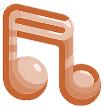

Metrônomo online, seu controle preciso sobre o tempo e
acentuações na batida;
Metrônomo online, seu controle preciso sobre o tempo e
acentuações na batida; Vídeos explicativos, com explicações e dicas de como
tocar;
Vídeos explicativos, com explicações e dicas de como
tocar; Comentarios e respostas da comunidade, para te manter
conectado
e conhecer novos gostos, técnicas e dicas.
Comentarios e respostas da comunidade, para te manter
conectado
e conhecer novos gostos, técnicas e dicas.
AFINADOR
Bem vindo ao nosso Afinador online! Sua solução em um passo para alcançar a afinação perfeita
cada
vez que você tocar. Desenvolvido para ser simples e prático, esta ferramenta é sua aliada ao
criar
músicas com claridade e precisão.
Independente de se você é iniciante ou um mestre na música procurando por uma ferramente
confiável.
Este afinador foi feito para se adequar às necessidades de todos os músicos. Experiencie
harmonia em seus dedos hoje, e deixe a verdadeira voz do seu violão brilhar.

Antes de Começar
O botão no canto esquerdo superior é usado para selecionar um instrumento, contendo mais 9
opções de instrumentos.
O botão no canto direito superior modifica as configurações da afinação.
DIversas variações de afinação estão disponíveis, e certifique-se de verificar se o microfone
foi
habilitado.
O afinador precisa identificar o som da sua corda.
É vital a redução do barulho do ambiente enquanto afinar o instrumento.